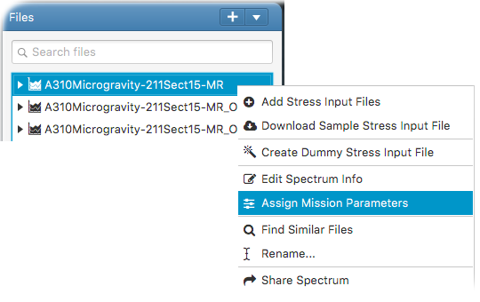

Mission parameters are useful for plotting various spectrum comparisons via mission parameters. Mission parameters
can be created and added to spectra (or external stress sequences). For this, enter parameter name and value, and click add.

This opens the assign mission parameters input panel. In the panel, enter the parameter names and values to be assigned.